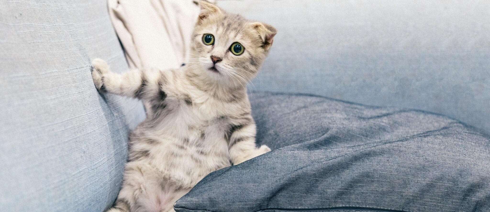

1. 고양이의 생활환경
| 요소 |
목적 |
주의 사항 |
| 안전한 은신처 |
휴식, 잠자기, 스트레스 완화 |
여러 개 위치, 어둡고 조용한 장소 |
| 수직 공간 |
운동, 오르내림, 전망 제공 |
캣 트리, 선반, 장식장 |
| 긁는 물건 |
영토 표시, 발톱 가꾸기 |
다양한 소재, 수직 및 수평 |
| 장난감 |
운동, 정신 자극, 지루함 완화 |
교대식 놀이, 먹이 퍼즐 |
| 음식과 물 그릇 |
필수 영양 및 수분 |
일관된 위치, 분리하여 배치 |
| 화장실 |
청결과 위생 |
청결 유지, 뚜껑이 있는 골집 |
| 창문 또는 고양이 관찰대 |
야외 전망 제공, 지루함 완화 |
안전을 위해 창문에 그물 추가 |
| 브러싱 |
피부 및 털 관리, 결합 |
정기적이고 부드럽게 브러싱 |
| 수의사 진찰 |
건강 상태 모니터링, 예방 조치 |
정기 검진 및 예방 접종 |
2. 고양이의 행동양식
시각적 언어:
- - 꼬리 흔들기: "느슨하게 꼬리를 흔드는 고양이는 일반적으로 편안하고 만족하는 신호입니다." (ASPCA, 2023)
- - 귀 자세: "고양이의 귀가 위로 서 있는 것은 경계심이나 두려움을 나타낼 수 있습니다." (Cornell University College of Veterinary Medicine, 2023)
- - 동공 커짐: "고양이의 동공이 확장되면, 놀람, 흥분 또는 걱정을 나타낼 수 있습니다." (Humane Society of the United States, 2023)
음성적 언어:
- - 졸졸 흐르는 소리: "졸졸 흐르는 소리는 고양이가 기쁨, 애정 또는 배고픔을 표현하는 방법입니다." (International Cat Care, 2023)
- - 울음소리: "고양이의 울음소리는 주의를 끄거나, 관심을 구하거나, 위협을 나타낼 수 있습니다." (PetMD, 2023)
- - 으르렁 소리: "으르렁대는 소리는 고양이가 두려움, 공격성 또는 침략성을 표현하는 방법입니다." (American Veterinary Medical Association, 2023)
몸짓 언어:
- - 옹기종기: "옹기종기하는 고양이는 행복하고 편안한 표현입니다." (VCA Animal Hospitals, 2023)
- - 등을 구부리기: "고양이가 등을 구부리는 것은 놀람이나 두려움을 나타낼 수 있습니다." (National Geographic, 2023)
- - 꼬리를 꽂기: "꼬리를 꽂으면 고양이가 두려움이나 불안함을 느끼고 있음을 나타낼 수 있습니다." (Animal Planet, 2023)